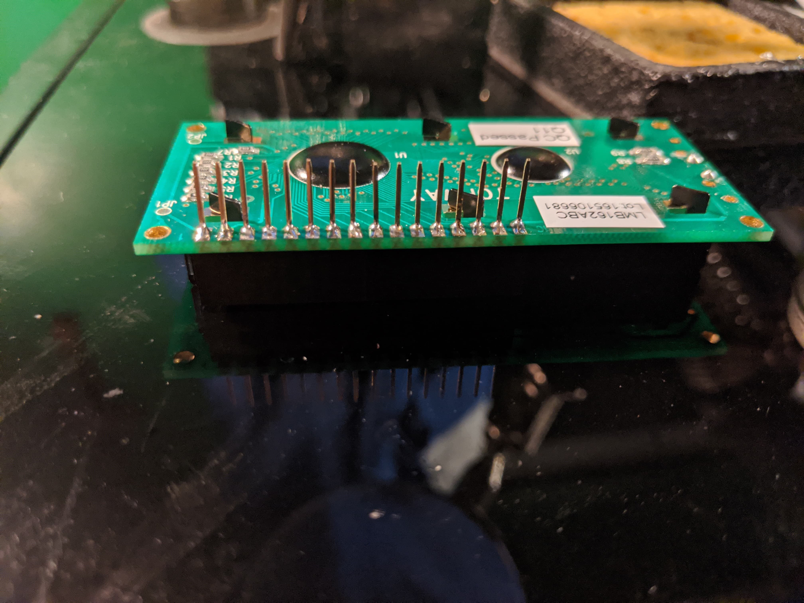
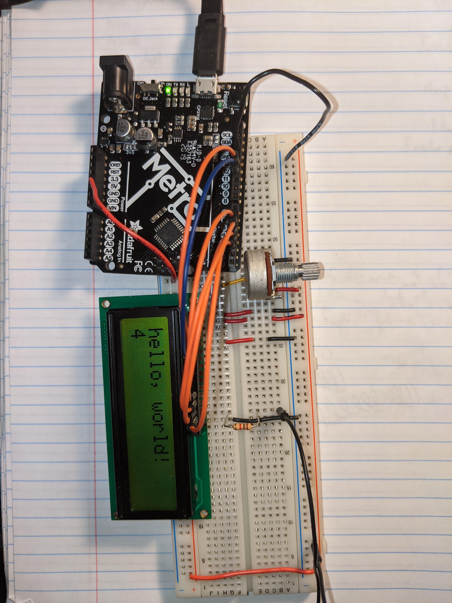
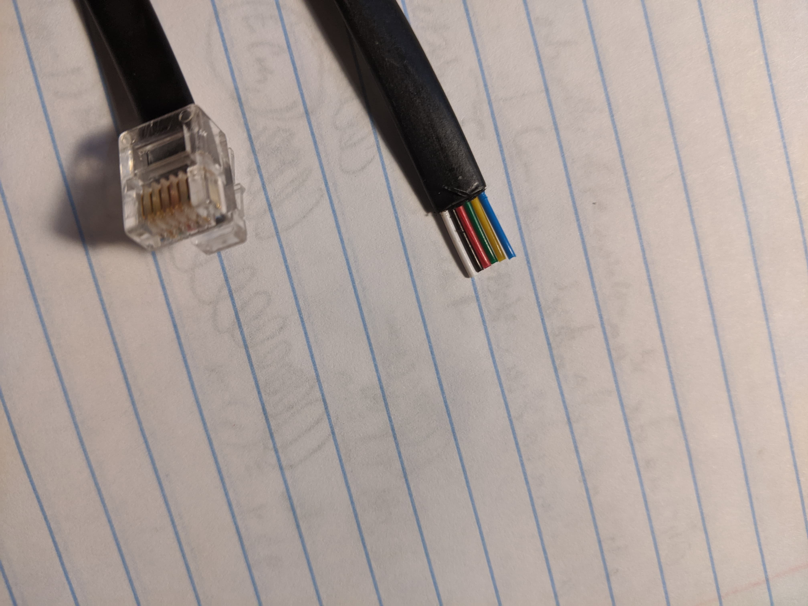
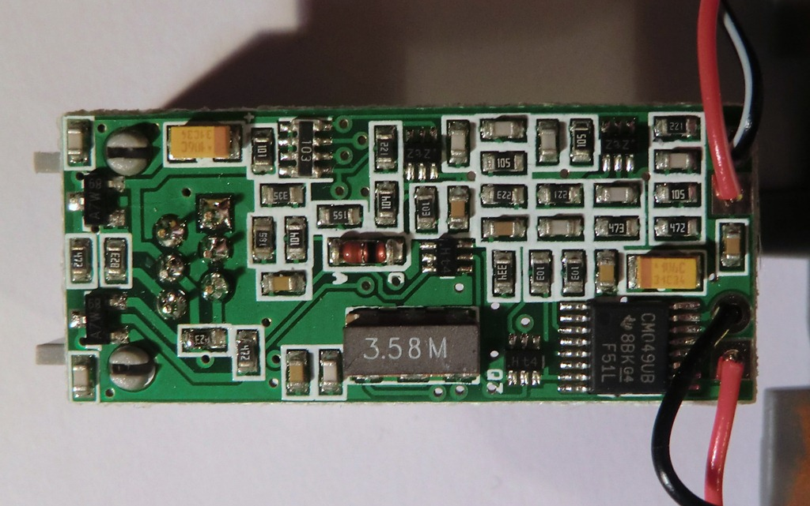
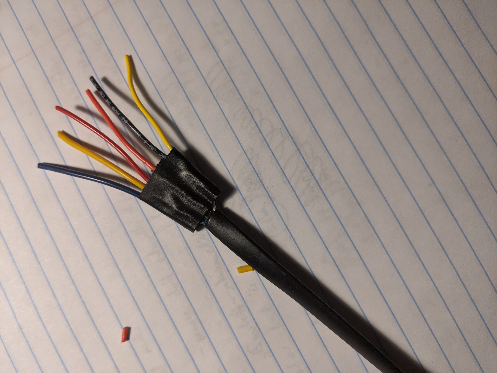
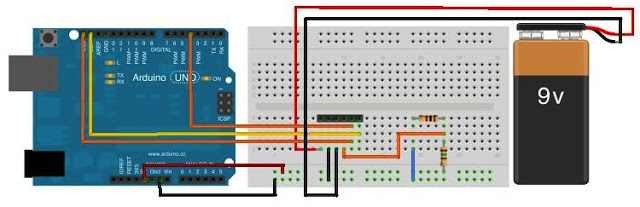
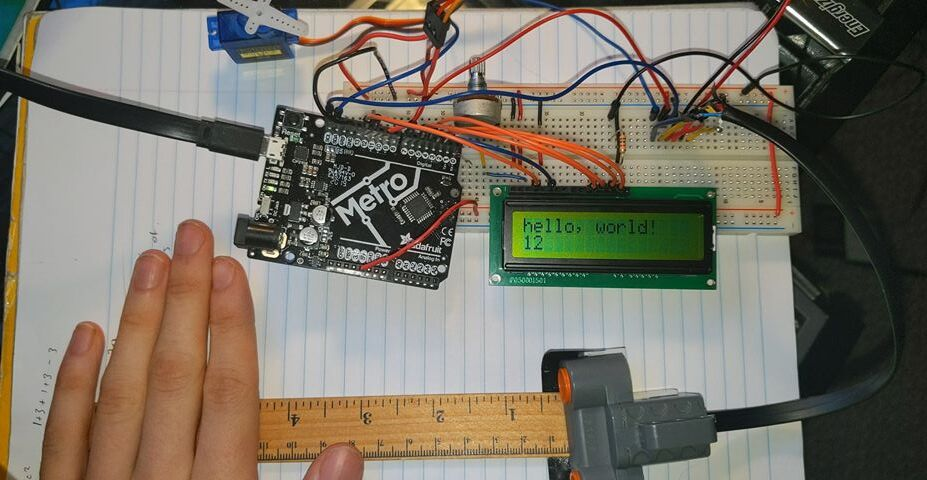

Working From Home
Over the past week, quarantining at home, I had a chance to sift through some old electronics kits that I never had the chance to explore. I found a soldering iron, an (unopened) book on op amps, and an arduino kit that included various components, among them some input and output devices.
One of the output devices that stuck out to me was the LCD screen, so this is where I started my exploration of output devices for the week.
LCD
I first set out to use the LCD screen, a novel output device for me. The LCD board I had found was a LMB162ABC board and so I first found the datasheet. Most of the pins seemed necessary and so I soldered header pins onto all of the terminals of the board:

Next I found a tutorial on a simple hello world program with the LCD on the official Arduino site.
The circuit diagram did not provide explicit steps for setup and after I plugged everything in and tried to run the code. Instead of seeing hello, world, I saw a row of dark boxes and then a blinking cursor positioned after the missing hello world text. This was strange as it didn’t seem to be an issue with contrast (the cursor showed up), which is a problem many people faced on the forums I found. Low contrast can occur with to large a potentiometer, which controls the contrast when adjusted.
This hidden post on the Arduino forums ultimately solved my problems. By giving a comprehensible breakdown of everything going on in the circuit, I was able to make sure each of the hardware components was setup correctly before moving on to the code. The pins, from the data sheet, are as follows:
(1) GND
(2) +5V
(3) LCD Contrast V0
(4) Register Select (LOW/HIGH for for instruction vs display)
(5) Read/Write (LOW for write)
(6) Data enable pin
(7-14) Up to 8-bit data bus
(15) Backlight +V
(16) Backlight -V
In the end, my error was connecting pin 5 to my 5V rail instead of GND, putting the LCD board in read mode instead of write mode. The process I used to isolate this was the following steps:
- start by hooking up backlight pins 15 and 16 to 5V and GND respectively (a resistor can be used between 15 and 5V to control backlight intensity)
- Connect pins 1 and 2 to GND and 5V respectively and 3 to a 10k potentiometer between GND and 5V.
- Connect the data pins (I used 4 bit mode, so pins 11-14), register select pin 4 and data enable pin 6 directly to your microcontrollor.
- Connect pin 5, the read/write control to GND if you plan on writing and 5V if you plan on reading.
After step 1. you should see the display backlight turn on with uniform color and brightness. By adjusting the potentiometer in part 2, you should see a row of 16x2 empty boxes indicating the display positions of the LCD screen. The potentiometer will adjust the contrast of these boxes. Steps 3 and 4, if performed correctly, will then allow you to write hello, world to the lcd as in the code example on the arduino site. The final product looked like this:

NXT Ultrasonic Sensor
After digging up my old LEGO kit, I looked up videos of people disassembling various sensors and motors to determine how best to attach these sensors with my Arduino. The parts typically connect to the NXT body through RJ12 wire. I had some at home and took a peek inside. The cables had two identical connections at either end before I cut into them:

I am particularly interested in the ultrasonic distance sensor in case I end up trying to build some sort of autonomous vehicle for my final project. The circuit board within the ultrasonic sensor looked like this (source):

Notice the 6 soldered pins on the left of this image. These are soldered to the female RJ12 port on the sensor. So I could either desolder the RJ12 female port and solder new wires directly to the PCB or cut open one of the cables and solder wires to this. I elected for the second option as I don’t yet have desoldering equipment at home and wanted to keep the sensor in tact for future LEGO usage. For a more permanent solution in a later project that would destroy the sensor, I might affix wires directly to the board. After cutting and soldering the RJ12 wire at one end I had the following:

The next step was to understand which wire was responsible for what. After some digging I found that LEGO is very open with their products and provided linked specifications on their website, at the bottom of the page in the developer kits section.
I had an older NXT (not the EV3) and unfortunately the link for this developer kit was broken. After some searching, I found this archived blog in which somebody configured all NXT sensors to work with an arduino board. This source provided many other helpful links for me.
The most helpful of these was a blog post which describes the authors process in creating a shield to interface between an Arduino and the NXT sensors. This site had backups of the NXT hardware dev kit and ultrasonic appendix. From the diagrams in the appendix I learned the wires for the ultrasonic sensor were as follows:
- White - +9V
- Black - GND
- Red - GND
- Green - +5V
- Yellow - I2C Clock
- Blue - I2C Data
Fortunately the Arduino Uno and Adafruit Metro boards have SDA and SCL pins along with a built-in library for I2C communication, SDA corresponding to the data pin and SCL to the clock pin. The circuit diagram I ended up using was as follows:
 where the black header pin bar from left to right indicates connections 1-6 on the RJ12 wire from the sensor.
After setting up the circuit I needed to get the I2C connection working correctly.
The I2C library I used can be found here
and is backed up in a github repo.
The comments in the i2cmaster.h header file were helpful in
understanding some of the important functions for reading and writing with
the i2c interface.
The general process for issuing a command to the sensor involves:
- Starting a write with the
i2c_startfunction - Issuing a specific byte instruction with
i2c_write - Close the connection with
i2c_stop
We then wait for the to receive the command and process and then do the following to read back the gathered data:
- Starting the read process with
i2c_rep_start - Read byte by byte sensor data with
i2c_readAck - Close the connection with
i2c_stop
Overall issuing a byte command to the sensor looks like:
byte buf[9]; // Buffer to store the received valeus
int ultrasonicCommand(byte cmd) {
delay(100); // There has to be a delay between commands
pinMode(clockPin, INPUT); // Needed for writing to work
digitalWrite(clockPin, HIGH);
if(i2c_start(addr+I2C_WRITE)) {
Serial.println("ERROR i2c_start");
i2c_stop();
return 1;
}
if (i2c_write(cmd)) {
Serial.println("ERROR i2c_write");
i2c_stop();
return 1;
}
i2c_stop();
delayMicroseconds(60); // Needed for receiving to work
pinMode(clockPin, OUTPUT);
digitalWrite(clockPin, LOW);
delayMicroseconds(34);
pinMode(clockPin, INPUT);
digitalWrite(clockPin, HIGH);
delayMicroseconds(60);
if(i2c_rep_start(addr + I2C_READ)) {
Serial.println("ERROR i2c_rep_start");
i2c_stop();
return 1;
}
for (int i = 0; i < 8; i++) {
buf[i] = i2c_readAck();
}
buf[8] = i2c_readNak();
i2c_stop();
return 0;
}
This function stores the results of the sensor reading in global variable
buf. Valid commands for this sensor can be found in the
appendix
provided by LEGO mentioned above.
By issuing various byte commands I was able to get information about the sensor:
| Byte | Meaning | Output |
|---|---|---|
| 0x00 | Version | V1.0 |
| 0x08 | Product ID | LEGO |
| 0x10 | Sensor Type | Sonar |
| 0x14 | Sensor Units | 10E-2m |
And also got the sensor to read values in cm (the units given in the table).
Integration
With both input from the ultrasonic sensor and the LCD output all setup,
the next step I took was to integrate them. I replaced the
Serial.println calls in my ultrasonic code with lcd.print and imported
the appropriate header file. I kept the hello world and printed the
distance on the second line. I can imagine the LCD serving as a nice
debugger in some cases:
As can be seen in the (low quality) video, the ultrasonic sensor is relatively accurate to the true object distance and it correctly displays this distance on the LCD screen. For fun I added a servo motor at the end, connecting the ground and 5V wires to my circuit accordingly and putting the control wire in pin 9 on the Arduino. This could be used to translate linear motion into rotational motion:

The final code for this circuit is available here